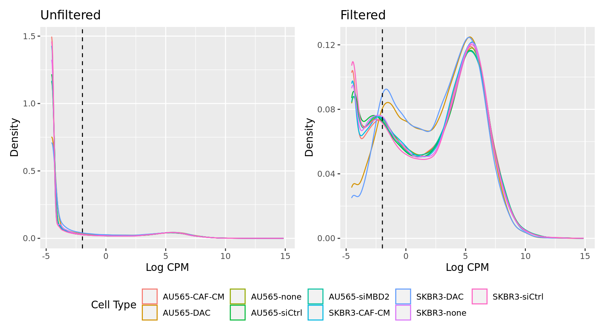
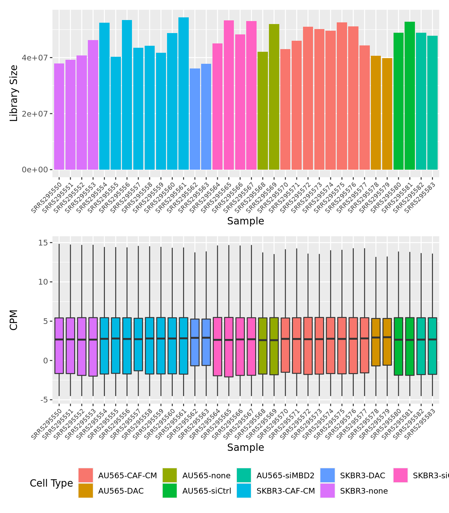
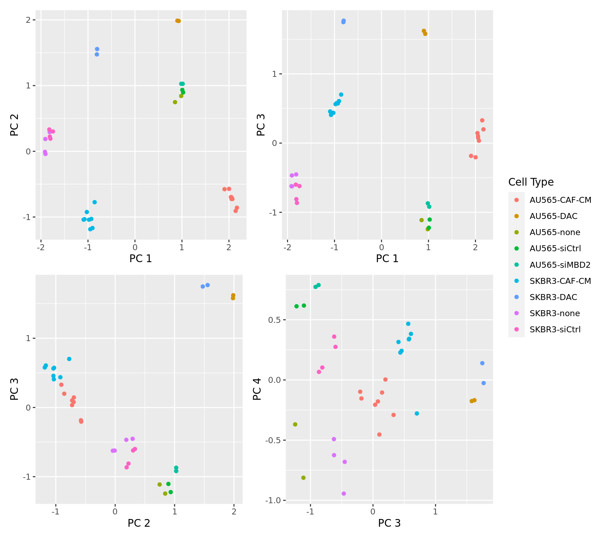
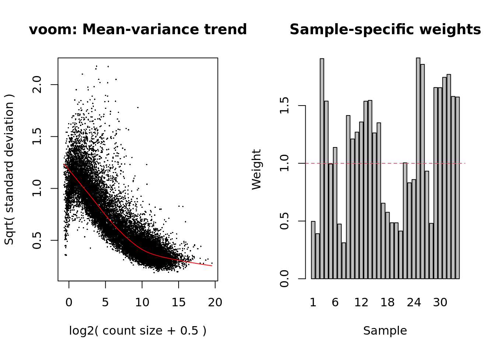

Gene set testing for Illumina HumanMethylation Arrays
Generating “truth” gene sets from RNA-seq data
Jovana Maksimovic, Alicia Oshlack and Belinda Phipson
April 01, 2021
Last updated: 2021-04-01
Checks: 7 0
Knit directory: methyl-geneset-testing/
This reproducible R Markdown analysis was created with workflowr (version 1.6.2). The Checks tab describes the reproducibility checks that were applied when the results were created. The Past versions tab lists the development history.
Great! Since the R Markdown file has been committed to the Git repository, you know the exact version of the code that produced these results.
Great job! The global environment was empty. Objects defined in the global environment can affect the analysis in your R Markdown file in unknown ways. For reproduciblity it’s best to always run the code in an empty environment.
The command set.seed(20200302) was run prior to running the code in the R Markdown file. Setting a seed ensures that any results that rely on randomness, e.g. subsampling or permutations, are reproducible.
Great job! Recording the operating system, R version, and package versions is critical for reproducibility.
Nice! There were no cached chunks for this analysis, so you can be confident that you successfully produced the results during this run.
Great job! Using relative paths to the files within your workflowr project makes it easier to run your code on other machines.
Great! You are using Git for version control. Tracking code development and connecting the code version to the results is critical for reproducibility.
The results in this page were generated with repository version eeaf080. See the Past versions tab to see a history of the changes made to the R Markdown and HTML files.
Note that you need to be careful to ensure that all relevant files for the analysis have been committed to Git prior to generating the results (you can use wflow_publish or wflow_git_commit). workflowr only checks the R Markdown file, but you know if there are other scripts or data files that it depends on. Below is the status of the Git repository when the results were generated:
Ignored files:
Ignored: .Rhistory
Ignored: .Rproj.user/
Ignored: analysis/figures.nb.html
Ignored: code/.job/
Ignored: code/old/
Ignored: data/annotations/
Ignored: data/cache-intermediates/
Ignored: data/cache-region/
Ignored: data/cache-rnaseq/
Ignored: data/cache-runtime/
Ignored: data/datasets/GSE110554-data.RData
Ignored: data/datasets/GSE135446-data.RData
Ignored: data/datasets/GSE95462-data.RData
Ignored: data/datasets/GSE95462_RAW/
Ignored: data/datasets/SRP100803/
Ignored: data/datasets/SRP125125/SRR6298258/
Ignored: data/datasets/SRP125125/SRR6298271/
Ignored: data/datasets/SRP125125/SRR6298273/
Ignored: data/datasets/SRP125125/SRR6298278/
Ignored: data/datasets/SRP125125/SRR6298281/
Ignored: data/datasets/SRP125125/SRR6298284/
Ignored: data/datasets/SRP125125/SRR6298286/
Ignored: data/datasets/SRP125125/SRR6298299/
Ignored: data/datasets/SRP125125/SRR6298302/
Ignored: data/datasets/SRP125125/SRR6298307/
Ignored: data/datasets/SRP125125/SRR6298310/
Ignored: data/datasets/SRP125125/SRR6298313/
Ignored: data/datasets/SRP125125/SRR6298315/
Ignored: data/datasets/SRP125125/SRR6298328/
Ignored: data/datasets/SRP125125/SRR6298331/
Ignored: data/datasets/SRP125125/SRR6298336/
Ignored: data/datasets/SRP125125/SRR6298339/
Ignored: data/datasets/SRP125125/SRR6298342/
Ignored: data/datasets/SRP125125/SRR6298344/
Ignored: data/datasets/SRP125125/SRR6298365/
Ignored: data/datasets/SRP125125/SRR6298370/
Ignored: data/datasets/SRP125125/SRR6298373/
Ignored: data/datasets/SRP125125/SRR6298376/
Ignored: data/datasets/SRP125125/SRR_Acc_List.txt
Ignored: data/datasets/SRP125125/SRR_Acc_List_Full.txt
Ignored: data/datasets/SRP125125/SraRunTable.txt
Ignored: data/datasets/SRP125125/multiqc_data/
Ignored: data/datasets/SRP125125/multiqc_report.html
Ignored: data/datasets/SRP125125/quants/
Ignored: data/datasets/SRP166862/
Ignored: data/datasets/SRP217468/
Ignored: data/datasets/SraRunTable.txt
Ignored: data/datasets/TCGA.BRCA.rds
Ignored: data/datasets/TCGA.KIRC.rds
Ignored: data/misc/
Ignored: output/FDR-analysis/
Ignored: output/compare-methods/
Ignored: output/figures/
Ignored: output/methylgsa-params/
Ignored: output/random-cpg-sims/
Unstaged changes:
Modified: .Rprofile
Modified: analysis/04_expressionGenesetsFibroid.Rmd
Modified: analysis/05_compareMethodsFibroid.Rmd
Modified: analysis/07_regionAnalysisFibroid.Rmd
Note that any generated files, e.g. HTML, png, CSS, etc., are not included in this status report because it is ok for generated content to have uncommitted changes.
These are the previous versions of the repository in which changes were made to the R Markdown (analysis/04_expressionGenesetsCellLines.Rmd) and HTML (docs/04_expressionGenesetsCellLines.html) files. If you’ve configured a remote Git repository (see ?wflow_git_remote), click on the hyperlinks in the table below to view the files as they were in that past version.
| File | Version | Author | Date | Message |
|---|---|---|---|---|
| Rmd | d44c029 | JovMaksimovic | 2021-03-29 | Rename analysis files to reflect addition of new datasets |
library(tximport)
library(here)
library(tidyverse)
library(EnsDb.Hsapiens.v75)
library(readr)
library(limma)
library(edgeR)
library(glue)
library(patchwork)
library(biobroom)
library(ChAMP)
source(here("code/utility.R"))Data download, mapping and quantification
The RNAseq dataset used to generate the “truth” gene sets is avoilable from GEO at GSE107011 or SRA at SRP100803.
The RNAseq data was quasi-mapped and quantified using Salmon (v1.3.0) with the hg19_cdna human transcriptome downloaded from refgenie. The code used to perform the Salmon quasi-mapping and quantification can be found in code/salmon-quant.sh.
For downstream analysis that quantification files (quant.sf) for each sample are expected to be present in the following directory structure:
datadatasetsSRP100803quantsSRR6298258_quant- …
- …
SRR6298376_quant
Data import
Load sample information and file names.
targets <- read_csv(here("data/datasets/SRP100803/SraRunTable.txt"))
── Column specification ────────────────────────────────────────────────────────
cols(
.default = col_character(),
AvgSpotLen = col_double(),
Bases = col_double(),
Bytes = col_double(),
ReleaseDate = col_datetime(format = "")
)
ℹ Use `spec()` for the full column specifications.targets# A tibble: 34 x 26
Run `Assay Type` AvgSpotLen Bases BioProject BioSample Bytes Cell_Line
<chr> <chr> <dbl> <dbl> <chr> <chr> <dbl> <chr>
1 SRR5… RNA-Seq 150 8.17e9 PRJNA3771… SAMN0646… 2.85e9 AU565
2 SRR5… RNA-Seq 150 6.75e9 PRJNA3771… SAMN0646… 2.55e9 SKBR3
3 SRR5… RNA-Seq 150 7.94e9 PRJNA3771… SAMN0646… 2.76e9 SKBR3
4 SRR5… RNA-Seq 150 7.61e9 PRJNA3771… SAMN0646… 2.73e9 AU565
5 SRR5… RNA-Seq 150 9.69e9 PRJNA3771… SAMN0646… 3.73e9 SKBR3
6 SRR5… RNA-Seq 150 7.26e9 PRJNA3771… SAMN0646… 2.52e9 SKBR3
7 SRR5… RNA-Seq 150 8.23e9 PRJNA3771… SAMN0646… 2.85e9 SKBR3
8 SRR5… RNA-Seq 150 9.43e9 PRJNA3771… SAMN0646… 3.23e9 SKBR3
9 SRR5… RNA-Seq 150 8.75e9 PRJNA3771… SAMN0646… 3.00e9 SKBR3
10 SRR5… RNA-Seq 150 6.72e9 PRJNA3771… SAMN0646… 2.71e9 SKBR3
# … with 24 more rows, and 18 more variables: `Center Name` <chr>,
# Consent <chr>, `DATASTORE filetype` <chr>, `DATASTORE provider` <chr>,
# `DATASTORE region` <chr>, Experiment <chr>, `GEO_Accession (exp)` <chr>,
# Instrument <chr>, LibraryLayout <chr>, LibrarySelection <chr>,
# LibrarySource <chr>, Organism <chr>, Platform <chr>, ReleaseDate <dttm>,
# `Sample Name` <chr>, source_name <chr>, `SRA Study` <chr>, Treatment <chr>Setup file paths and sample names.
foo <- list.files(here::here("data/datasets/SRP100803"), recursive = TRUE,
pattern = "sra", full.names = FALSE)
files <- list.files(here("data/datasets/SRP100803/quants"),
recursive = TRUE, pattern = "quant.sf", full.names = TRUE)
pos <- regexpr("SRR52955[0-9][0-9]", files, perl = TRUE)
names(files) <- unname(substr(files, pos,
pos[1] + attr(pos, "match.length") - 1))
head(files) SRR5295550
"/oshlack_lab/jovana.maksimovic/research/methyl-geneset-testing/data/datasets/SRP100803/quants/SRR5295550_quant/quant.sf"
SRR5295551
"/oshlack_lab/jovana.maksimovic/research/methyl-geneset-testing/data/datasets/SRP100803/quants/SRR5295551_quant/quant.sf"
SRR5295552
"/oshlack_lab/jovana.maksimovic/research/methyl-geneset-testing/data/datasets/SRP100803/quants/SRR5295552_quant/quant.sf"
SRR5295553
"/oshlack_lab/jovana.maksimovic/research/methyl-geneset-testing/data/datasets/SRP100803/quants/SRR5295553_quant/quant.sf"
SRR5295554
"/oshlack_lab/jovana.maksimovic/research/methyl-geneset-testing/data/datasets/SRP100803/quants/SRR5295554_quant/quant.sf"
SRR5295555
"/oshlack_lab/jovana.maksimovic/research/methyl-geneset-testing/data/datasets/SRP100803/quants/SRR5295555_quant/quant.sf" Associate transcripts with gene IDs for gene-level summarization.
edb <- EnsDb.Hsapiens.v75
tx2gene <- transcripts(edb, columns = c("tx_id", "gene_id"),
return.type = "DataFrame")
tx2geneDataFrame with 215647 rows and 2 columns
tx_id gene_id
<character> <character>
1 ENST00000000233 ENSG00000004059
2 ENST00000000412 ENSG00000003056
3 ENST00000000442 ENSG00000173153
4 ENST00000001008 ENSG00000004478
5 ENST00000001146 ENSG00000003137
... ... ...
215643 LRG_94t1 LRG_94
215644 LRG_96t1 LRG_96
215645 LRG_97t1 LRG_97
215646 LRG_98t1 LRG_98
215647 LRG_99t1 LRG_99Import gene-level counts and abundances.
txiG <- tximport(files, type = "salmon", tx2gene = tx2gene,
countsFromAbundance = "lengthScaledTPM",
ignoreTxVersion = TRUE)reading in files with read_tsv1 2 3 4 5 6 7 8 9 10 11 12 13 14 15 16 17 18 19 20 21 22 23 24 25 26 27 28 29 30 31 32 33 34
transcripts missing from tx2gene: 51356
summarizing abundance
summarizing counts
summarizing lengthcolnames(txiG$counts) <- names(files)
head(txiG$counts) SRR5295550 SRR5295551 SRR5295552 SRR5295553 SRR5295554
ENSG00000000003 679.9877348 707.139651 620.915202 688.543313 1435.466701
ENSG00000000005 0.8791538 0.000000 0.000000 0.000000 0.000000
ENSG00000000419 5135.9730233 4988.831642 5947.975183 6311.265529 6113.931151
ENSG00000000457 1351.6387722 1499.020154 1228.154131 1459.635308 1520.440856
ENSG00000000460 1051.7310270 1305.404770 1284.982032 1563.120073 1550.785776
ENSG00000000938 1.9955167 4.941811 1.935701 2.433545 4.001733
SRR5295555 SRR5295556 SRR5295557 SRR5295558 SRR5295559
ENSG00000000003 1125.126 1326.459564 1270.7543263 1160.461 1057.743
ENSG00000000005 0.000 0.000000 0.8806841 0.000 0.000
ENSG00000000419 4511.356 6041.164584 5299.6241489 5175.616 4684.767
ENSG00000000457 1182.055 2082.105262 1433.5223027 1368.921 1238.736
ENSG00000000460 1013.596 1524.890195 1194.4829351 1350.398 1121.108
ENSG00000000938 0.000 1.989935 19.6628968 0.000 0.000
SRR5295560 SRR5295561 SRR5295562 SRR5295563 SRR5295564
ENSG00000000003 1162.799334 1349.374522 1231.165874 1250.199785 853.702978
ENSG00000000005 0.000000 0.000000 1.711163 1.713193 0.000000
ENSG00000000419 5978.030875 6829.212124 4328.607138 4239.439257 6003.044109
ENSG00000000457 1378.666695 1608.068296 1181.380553 1412.318659 1116.717119
ENSG00000000460 1378.599801 1627.162053 1467.121647 1301.187671 1862.333372
ENSG00000000938 3.531104 3.528346 9.428385 7.686089 5.273657
SRR5295565 SRR5295566 SRR5295567 SRR5295568 SRR5295569
ENSG00000000003 1060.419919 913.828181 982.74159 1082.384851 1192.216188
ENSG00000000005 0.000000 0.000000 0.00000 0.000000 0.000000
ENSG00000000419 7159.759739 4951.569493 5825.67726 5857.190345 5321.982361
ENSG00000000457 1345.310551 1128.102503 1208.70917 1289.772474 1957.816070
ENSG00000000460 2078.816260 1819.201538 1856.71998 1519.161759 2168.279375
ENSG00000000938 5.133737 5.774705 21.26503 6.843112 3.144389
SRR5295570 SRR5295571 SRR5295572 SRR5295573 SRR5295574
ENSG00000000003 1548.25857 1512.005 1377.241652 1316.0711773 1609.736999
ENSG00000000005 0.00000 0.000 0.880877 0.0000000 0.000000
ENSG00000000419 4215.10628 3748.108 4369.802181 4207.7385374 3944.155170
ENSG00000000457 1655.51781 1957.309 1931.297459 1810.4320005 2027.028405
ENSG00000000460 1217.03245 1530.259 2449.656853 2438.7898821 2253.004365
ENSG00000000938 2.08848 0.000 2.843997 0.7972111 4.106739
SRR5295575 SRR5295576 SRR5295577 SRR5295578 SRR5295579
ENSG00000000003 1711.109252 1514.344441 1374.449712 868.422063 934.98980
ENSG00000000005 0.000000 0.000000 0.000000 1.727657 0.00000
ENSG00000000419 4073.862679 4197.474955 4030.026643 3003.699929 2967.44458
ENSG00000000457 2132.849984 2015.432638 1565.162402 1425.954670 1489.78633
ENSG00000000460 2345.312305 1855.021227 1366.434852 1516.148966 1439.21620
ENSG00000000938 3.172817 1.883655 4.159827 7.308241 14.34261
SRR5295580 SRR5295581 SRR5295582 SRR5295583
ENSG00000000003 835.73698 806.7619023 901.83773 721.19540
ENSG00000000005 0.00000 11.8861163 0.00000 0.00000
ENSG00000000419 4873.02824 5177.6688603 4021.75746 3720.87112
ENSG00000000457 1828.01629 1685.9448568 1460.73245 1332.36751
ENSG00000000460 1612.89849 1941.8087140 1517.38447 1505.47426
ENSG00000000938 10.59217 0.7982714 19.96309 11.24696Set up DGElist object for downstream analysis.
z <- DGEList(txiG$counts)
z$genes <- ensembldb::genes(edb, filter = GeneIdFilter(rownames(z)),
columns = c("gene_id", "symbol", "entrezid"),
return.type = "DataFrame")
z$genes$entrezid <- sapply(z$genes$entrezid, function(x) x[1])
z$genes$length <- rowMedians(txiG$length)
targets <- targets[match(colnames(z), targets$Run), ]
z$samples$group <- paste(targets$Cell_Line, targets$Treatment, sep = "-")
zAn object of class "DGEList"
$counts
SRR5295550 SRR5295551 SRR5295552 SRR5295553 SRR5295554
ENSG00000000003 679.9877348 707.1397 620.9152 688.5433 1435.467
ENSG00000000005 0.8791538 0.0000 0.0000 0.0000 0.000
ENSG00000000419 5135.9730233 4988.8316 5947.9752 6311.2655 6113.931
ENSG00000000457 1351.6387722 1499.0202 1228.1541 1459.6353 1520.441
ENSG00000000460 1051.7310270 1305.4048 1284.9820 1563.1201 1550.786
SRR5295555 SRR5295556 SRR5295557 SRR5295558 SRR5295559
ENSG00000000003 1125.126 1326.460 1270.7543263 1160.461 1057.743
ENSG00000000005 0.000 0.000 0.8806841 0.000 0.000
ENSG00000000419 4511.356 6041.165 5299.6241489 5175.616 4684.767
ENSG00000000457 1182.055 2082.105 1433.5223027 1368.921 1238.736
ENSG00000000460 1013.596 1524.890 1194.4829351 1350.398 1121.108
SRR5295560 SRR5295561 SRR5295562 SRR5295563 SRR5295564
ENSG00000000003 1162.799 1349.375 1231.165874 1250.199785 853.703
ENSG00000000005 0.000 0.000 1.711163 1.713193 0.000
ENSG00000000419 5978.031 6829.212 4328.607138 4239.439257 6003.044
ENSG00000000457 1378.667 1608.068 1181.380553 1412.318659 1116.717
ENSG00000000460 1378.600 1627.162 1467.121647 1301.187671 1862.333
SRR5295565 SRR5295566 SRR5295567 SRR5295568 SRR5295569
ENSG00000000003 1060.420 913.8282 982.7416 1082.385 1192.216
ENSG00000000005 0.000 0.0000 0.0000 0.000 0.000
ENSG00000000419 7159.760 4951.5695 5825.6773 5857.190 5321.982
ENSG00000000457 1345.311 1128.1025 1208.7092 1289.772 1957.816
ENSG00000000460 2078.816 1819.2015 1856.7200 1519.162 2168.279
SRR5295570 SRR5295571 SRR5295572 SRR5295573 SRR5295574
ENSG00000000003 1548.259 1512.005 1377.241652 1316.071 1609.737
ENSG00000000005 0.000 0.000 0.880877 0.000 0.000
ENSG00000000419 4215.106 3748.108 4369.802181 4207.739 3944.155
ENSG00000000457 1655.518 1957.309 1931.297459 1810.432 2027.028
ENSG00000000460 1217.032 1530.259 2449.656853 2438.790 2253.004
SRR5295575 SRR5295576 SRR5295577 SRR5295578 SRR5295579
ENSG00000000003 1711.109 1514.344 1374.450 868.422063 934.9898
ENSG00000000005 0.000 0.000 0.000 1.727657 0.0000
ENSG00000000419 4073.863 4197.475 4030.027 3003.699929 2967.4446
ENSG00000000457 2132.850 2015.433 1565.162 1425.954670 1489.7863
ENSG00000000460 2345.312 1855.021 1366.435 1516.148966 1439.2162
SRR5295580 SRR5295581 SRR5295582 SRR5295583
ENSG00000000003 835.737 806.76190 901.8377 721.1954
ENSG00000000005 0.000 11.88612 0.0000 0.0000
ENSG00000000419 4873.028 5177.66886 4021.7575 3720.8711
ENSG00000000457 1828.016 1685.94486 1460.7324 1332.3675
ENSG00000000460 1612.898 1941.80871 1517.3845 1505.4743
56002 more rows ...
$samples
group lib.size norm.factors
SRR5295550 SKBR3-none 37864183 1
SRR5295551 SKBR3-none 39272841 1
SRR5295552 SKBR3-none 40743259 1
SRR5295553 SKBR3-none 46223473 1
SRR5295554 SKBR3-CAF-CM 52497288 1
29 more rows ...
$genes
DataFrame with 56007 rows and 4 columns
gene_id symbol entrezid length
<character> <character> <integer> <numeric>
1 ENSG00000000003 TSPAN6 7105 3356.578
2 ENSG00000000005 TNMD 64102 789.826
3 ENSG00000000419 DPM1 8813 734.144
4 ENSG00000000457 SCYL3 57147 3061.358
5 ENSG00000000460 C1orf112 55732 1864.070
... ... ... ... ...
56003 ENSG00000273486 RP11-731C17.2 NA 1369.2715
56004 ENSG00000273487 RP4-621B10.8 NA 1002.6014
56005 ENSG00000273489 RP11-180C16.1 NA 3449.3606
56006 ENSG00000273492 AP000230.1 NA 1698.7488
56007 ENSG00000273493 RP11-80H18.4 NA 26.3426Quality control
Genes that do not have an adequate number of reads in any sample should be filtered out prior to downstream analyses. From a biological perspective, genes that are not expressed at a biologically meaningful level in any condition are not of interest. Statistically, we get a better estimate of the mean-variance relationship in the data and reduce the number of statistical tests that are performes during differential expression analyses.
Filter out lowly expressed genes and calculate TMM normalisation factors.
keep <- filterByExpr(z, group = z$samples$group)
x <- z[keep, ]
y <- calcNormFactors(x)
yAn object of class "DGEList"
$counts
SRR5295550 SRR5295551 SRR5295552 SRR5295553 SRR5295554
ENSG00000000003 679.987735 707.139651 620.915202 688.543313 1435.466701
ENSG00000000419 5135.973023 4988.831642 5947.975183 6311.265529 6113.931151
ENSG00000000457 1351.638772 1499.020154 1228.154131 1459.635308 1520.440856
ENSG00000000460 1051.731027 1305.404770 1284.982032 1563.120073 1550.785776
ENSG00000000938 1.995517 4.941811 1.935701 2.433545 4.001733
SRR5295555 SRR5295556 SRR5295557 SRR5295558 SRR5295559
ENSG00000000003 1125.126 1326.459564 1270.7543 1160.461 1057.743
ENSG00000000419 4511.356 6041.164584 5299.6241 5175.616 4684.767
ENSG00000000457 1182.055 2082.105262 1433.5223 1368.921 1238.736
ENSG00000000460 1013.596 1524.890195 1194.4829 1350.398 1121.108
ENSG00000000938 0.000 1.989935 19.6629 0.000 0.000
SRR5295560 SRR5295561 SRR5295562 SRR5295563 SRR5295564
ENSG00000000003 1162.799334 1349.374522 1231.165874 1250.199785 853.702978
ENSG00000000419 5978.030875 6829.212124 4328.607138 4239.439257 6003.044109
ENSG00000000457 1378.666695 1608.068296 1181.380553 1412.318659 1116.717119
ENSG00000000460 1378.599801 1627.162053 1467.121647 1301.187671 1862.333372
ENSG00000000938 3.531104 3.528346 9.428385 7.686089 5.273657
SRR5295565 SRR5295566 SRR5295567 SRR5295568 SRR5295569
ENSG00000000003 1060.419919 913.828181 982.74159 1082.384851 1192.216188
ENSG00000000419 7159.759739 4951.569493 5825.67726 5857.190345 5321.982361
ENSG00000000457 1345.310551 1128.102503 1208.70917 1289.772474 1957.816070
ENSG00000000460 2078.816260 1819.201538 1856.71998 1519.161759 2168.279375
ENSG00000000938 5.133737 5.774705 21.26503 6.843112 3.144389
SRR5295570 SRR5295571 SRR5295572 SRR5295573 SRR5295574
ENSG00000000003 1548.25857 1512.005 1377.241652 1316.0711773 1609.736999
ENSG00000000419 4215.10628 3748.108 4369.802181 4207.7385374 3944.155170
ENSG00000000457 1655.51781 1957.309 1931.297459 1810.4320005 2027.028405
ENSG00000000460 1217.03245 1530.259 2449.656853 2438.7898821 2253.004365
ENSG00000000938 2.08848 0.000 2.843997 0.7972111 4.106739
SRR5295575 SRR5295576 SRR5295577 SRR5295578 SRR5295579
ENSG00000000003 1711.109252 1514.344441 1374.449712 868.422063 934.98980
ENSG00000000419 4073.862679 4197.474955 4030.026643 3003.699929 2967.44458
ENSG00000000457 2132.849984 2015.432638 1565.162402 1425.954670 1489.78633
ENSG00000000460 2345.312305 1855.021227 1366.434852 1516.148966 1439.21620
ENSG00000000938 3.172817 1.883655 4.159827 7.308241 14.34261
SRR5295580 SRR5295581 SRR5295582 SRR5295583
ENSG00000000003 835.73698 806.7619023 901.83773 721.19540
ENSG00000000419 4873.02824 5177.6688603 4021.75746 3720.87112
ENSG00000000457 1828.01629 1685.9448568 1460.73245 1332.36751
ENSG00000000460 1612.89849 1941.8087140 1517.38447 1505.47426
ENSG00000000938 10.59217 0.7982714 19.96309 11.24696
19514 more rows ...
$samples
group lib.size norm.factors
SRR5295550 SKBR3-none 37864183 0.9915105
SRR5295551 SKBR3-none 39272841 1.0101917
SRR5295552 SKBR3-none 40743259 0.9938370
SRR5295553 SKBR3-none 46223473 0.9833207
SRR5295554 SKBR3-CAF-CM 52497288 0.9850471
29 more rows ...
$genes
DataFrame with 19519 rows and 4 columns
gene_id symbol entrezid length
<character> <character> <integer> <numeric>
1 ENSG00000000003 TSPAN6 7105 3356.578
2 ENSG00000000419 DPM1 8813 734.144
3 ENSG00000000457 SCYL3 57147 3061.358
4 ENSG00000000460 C1orf112 55732 1864.070
5 ENSG00000000938 FGR 2268 1793.514
... ... ... ... ...
19515 ENSG00000273451 RP4-569M23.4 NA 692.659
19516 ENSG00000273456 RP11-686O6.2 NA 360.690
19517 ENSG00000273472 RP11-102N12.3 NA 1079.271
19518 ENSG00000273486 RP11-731C17.2 NA 1369.271
19519 ENSG00000273489 RP11-180C16.1 NA 3449.361Plotting the distribution log-CPM values shows that a majority of genes within each sample are either not expressed or lowly-expressed with log-CPM values that are small or negative.
L <- mean(z$samples$lib.size) * 1e-6
M <- median(z$samples$lib.size) * 1e-6
dat <- tidy(z, addSamples = TRUE)Warning: `tbl_df()` is deprecated as of dplyr 1.0.0.
Please use `tibble::as_tibble()` instead.
This warning is displayed once every 8 hours.
Call `lifecycle::last_warnings()` to see where this warning was generated.dat$cpm <- reshape2::melt(cpm(z, log = TRUE), value.name = "cpm")$cpm
p1 <- ggplot(dat, aes(x = cpm, colour = group)) +
geom_density() +
labs(colour = "Cell Type", x = "Log CPM", y = "Density",
title = "Unfiltered") +
geom_vline(xintercept = log2(10/M + 2/L), linetype = "dashed")
dat <- tidy(y, addSamples = TRUE)
dat$cpm <- reshape2::melt(cpm(y, log = TRUE), value.name = "cpm")$cpm
p2 <- ggplot(dat, aes(x = cpm, colour = group)) +
geom_density() +
labs(colour = "Cell Type", x = "Log CPM", y = "Density",
title = "Filtered") +
geom_vline(xintercept = log2(10/M + 2/L), linetype = "dashed")
p1 + p2 + plot_layout(guides = "collect") & theme(legend.position = "bottom")
dat <- rownames_to_column(y$samples, var = "sample")
p1 <- ggplot(dat, aes(x = sample, y = lib.size, fill = group)) +
geom_bar(stat = "identity") +
labs(fill = "Cell Type", x = "Sample", y = "Library Size") +
theme(axis.text.x = element_text(angle = 45, hjust = 1, size = 7),
legend.position = "bottom")
dat <- tidy(y, addSamples = TRUE)
dat$cpm <- reshape2::melt(cpm(y, log = TRUE), value.name = "cpm")$cpm
p2 <- ggplot(dat, aes(x = sample, y = cpm, fill = group)) +
geom_boxplot(show.legend = FALSE) +
labs(x = "Sample", y = "CPM") +
theme(axis.text.x = element_text(angle = 45, hjust = 1, size = 7),
legend.position = "bottom")
p <- (p1 / p2) +
plot_layout(guides = "collect") &
theme(legend.position = "bottom")
p
Save figure for use in manuscript.
outDir <- here::here("output/figures")
if (!dir.exists(outDir)) dir.create(outDir)
fig <- here("output/figures/SFig-4A.rds")
saveRDS(p1, fig, compress = FALSE)
fig <- here("output/figures/SFig-4B.rds")
saveRDS(p2, fig, compress = FALSE)Multi-dimensional scaling (MDS) plots show the largest sources of variation in the data. They are a good way of exploring the relationships between the samples and identifying structure in the data. The following series of MDS plots examines the first four principal components.
lcpm <- cpm(y, log = TRUE)
dims <- list(c(1,2), c(1,3), c(2,3), c(3,4))
p <- vector("list", length(dims))
for(i in 1:length(dims)){
tmp <- plotMDS(lcpm, top=1000, gene.selection="common", plot = FALSE,
dim.plot = dims[[i]])
dat <- data.frame(x = tmp$x, y = tmp$y, cellType = y$samples$group)
p[[i]] <- ggplot(dat, aes(x = x, y = y, colour = cellType)) +
geom_point() +
labs(colour = "Cell Type", x = glue("PC {tmp$dim.plot[1]}"),
y = glue("PC {tmp$dim.plot[2]}"))
}
(p[[1]] | p[[2]]) / (p[[3]] | p[[4]]) + plot_layout(guides = "collect")
Save figure for use in manuscript.
fig <- here("output/figures/SFig-4C.rds")
saveRDS(p[[1]], fig, compress = FALSE)Differential expression analysis
The TMM normalised data was transformed using voomWithQualityWeights. This takes into account the differing library sizes and the mean variance relationship in the data as well as calculating sample-specific quality weights. Linear models were fit using limma, taking into account the voom weights.
design <- model.matrix(~0+y$samples$group, data = targets)
colnames(design) <- c(levels(factor(y$samples$group)))
colnames(design) <- gsub("-","_", colnames(design))
v <- voomWithQualityWeights(y, design, plot = TRUE)
cont <- makeContrasts(AU565_nonevSKBR3_none=AU565_none-SKBR3_none,
#AU565_nonevAU565_DAC=AU565_none-AU565_DAC,
#SKBR3_nonevSKBR3_DAC=SKBR3_none-SKBR3_DAC,
NonevDAC=0.5*(AU565_none+SKBR3_none)-0.5*(AU565_DAC+SKBR3_DAC),
levels=design)
fit <- lmFit(v, design)
cfit <- contrasts.fit(fit, cont)
fit2 <- eBayes(cfit, robust = TRUE)
tfit <- treat(fit2, lfc = 1)
summary(decideTests(tfit, p.value = 0.05)) AU565_nonevSKBR3_none NonevDAC
Down 202 2481
NotSig 18780 16728
Up 537 310fitSum <- summary(decideTests(tfit, p.value = 0.05))
dat <- reshape2::melt(fitSum[rownames(fitSum) != "NotSig", ])
colnames(dat) <- c("dir", "comp", "value")
p <- ggplot(dat, aes(x = comp, y = value, fill = dir)) +
geom_bar(stat = "identity", position = "dodge") +
labs(x = "Comparison", y = "No. DE Genes (FDR < 0.05)", fill = "Direction") +
scale_fill_brewer(palette = "Set1", direction = -1)
p
Save figure for use in manuscript.
fig <- here("output/figures/SFig-4D.rds")
saveRDS(p, fig, compress = FALSE)Gene set testing
Testing for enrichment of GO categories and KEGG pathways amongst statistically significant differentially expressed genes.
Save results as RDS objects for use as “truth” sets in methylation analyses.
go <- NULL
kegg <- NULL
for(i in 1:ncol(cont)){
#top <- topTable(fit2, coef = i, p.value = 0.05, number = Inf)
top <- topTreat(tfit, coef = i, p.value = 0.05, number = Inf)
tmp <- goana(top$entrezid, universe = v$genes$entrezid,
covariate = v$genes$length)
tmp <- topGO(tmp, number = Inf)
tmp$FDR <- p.adjust(tmp$P.DE, method = "BH")
tmp <- rownames_to_column(tmp, var = "ID")
tmp$contrast <- colnames(cont)[i]
go <- bind_rows(go, tmp)
tmp <- kegga(top$entrezid, universe = v$genes$entrezid, species = "Hs",
covariate = v$genes$length, species.KEGG = "hsa")
tmp <- topKEGG(tmp, number = Inf)
tmp$FDR <- p.adjust(tmp$P.DE, method = "BH")
tmp <- rownames_to_column(tmp, var = "PID")
tmp$contrast <- colnames(cont)[i]
kegg <- bind_rows(kegg, tmp)
}Warning in rowsum.default(covariate, group = universe, reorder = FALSE): missing
values for 'group'Warning in rowsum.default(rep_len(1L, length(universe)), group = universe, :
missing values for 'group'Warning in rowsum.default(covariate, group = universe, reorder = FALSE): missing
values for 'group'Warning in rowsum.default(rep_len(1L, length(universe)), group = universe, :
missing values for 'group'outDir <- here::here("data/cache-rnaseq")
if (!dir.exists(outDir)) dir.create(outDir)
saveRDS(go, here(glue("data/cache-rnaseq/RNAseq-SRP100803-GO.rds")))
saveRDS(kegg, here(glue("data/cache-rnaseq/RNAseq-SRP100803-KEGG.rds")))Test whether the BROAD sets are enriched for the differentially expressed genes using the gsaseq function that can be found in code/utility.R
data(PathwayList)
keep <- sapply(PathwayList, function(x) any(x %in% v$genes$symbol))
entrez <- suppressMessages(lapply(PathwayList[keep], function(x){
tmp <- unname(v$genes$entrezid[v$genes$symbol %in% x])
tmp[!is.na(tmp)]
}))
gsa <- NULL
for(i in 1:ncol(cont)){
#top <- topTable(fit2, coef = i, p.value = 0.05, number = Inf)
top <- topTreat(tfit, coef = i, p.value = 0.05, number = Inf)
tmp <- gsaseq(top$entrezid, universe = v$genes$entrezid,
collection = entrez, gene.length = v$genes$length)
tmp <- rownames_to_column(data.frame(tmp), var = "ID")
tmp$contrast <- colnames(cont)[i]
gsa <- bind_rows(gsa, tmp)
}
saveRDS(gsa, here("data/cache-rnaseq/RNAseq-SRP100803-BROAD-GSA.rds"))
sessionInfo()R version 4.0.2 (2020-06-22)
Platform: x86_64-pc-linux-gnu (64-bit)
Running under: CentOS Linux 7 (Core)
Matrix products: default
BLAS: /config/binaries/R/4.0.2/lib64/R/lib/libRblas.so
LAPACK: /config/binaries/R/4.0.2/lib64/R/lib/libRlapack.so
locale:
[1] LC_CTYPE=en_AU.UTF-8 LC_NUMERIC=C
[3] LC_TIME=en_AU.UTF-8 LC_COLLATE=en_AU.UTF-8
[5] LC_MONETARY=en_AU.UTF-8 LC_MESSAGES=en_AU.UTF-8
[7] LC_PAPER=en_AU.UTF-8 LC_NAME=C
[9] LC_ADDRESS=C LC_TELEPHONE=C
[11] LC_MEASUREMENT=en_AU.UTF-8 LC_IDENTIFICATION=C
attached base packages:
[1] stats4 parallel stats graphics grDevices utils datasets
[8] methods base
other attached packages:
[1] ChAMP_2.20.1
[2] RPMM_1.25
[3] cluster_2.1.0
[4] DT_0.17
[5] IlluminaHumanMethylationEPICmanifest_0.3.0
[6] Illumina450ProbeVariants.db_1.26.0
[7] DMRcate_2.4.1
[8] ChAMPdata_2.22.0
[9] minfi_1.36.0
[10] bumphunter_1.32.0
[11] locfit_1.5-9.4
[12] iterators_1.0.13
[13] foreach_1.5.1
[14] Biostrings_2.58.0
[15] XVector_0.30.0
[16] SummarizedExperiment_1.20.0
[17] MatrixGenerics_1.2.1
[18] matrixStats_0.58.0
[19] biobroom_1.22.0
[20] broom_0.7.4
[21] patchwork_1.1.1
[22] glue_1.4.2
[23] edgeR_3.32.1
[24] limma_3.46.0
[25] EnsDb.Hsapiens.v75_2.99.0
[26] ensembldb_2.14.0
[27] AnnotationFilter_1.14.0
[28] GenomicFeatures_1.42.1
[29] AnnotationDbi_1.52.0
[30] Biobase_2.50.0
[31] GenomicRanges_1.42.0
[32] GenomeInfoDb_1.26.2
[33] IRanges_2.24.1
[34] S4Vectors_0.28.1
[35] BiocGenerics_0.36.0
[36] forcats_0.5.1
[37] stringr_1.4.0
[38] dplyr_1.0.4
[39] purrr_0.3.4
[40] readr_1.4.0
[41] tidyr_1.1.2
[42] tibble_3.0.6
[43] ggplot2_3.3.3
[44] tidyverse_1.3.0
[45] here_1.0.1
[46] tximport_1.18.0
[47] workflowr_1.6.2
loaded via a namespace (and not attached):
[1] rappdirs_0.3.3
[2] rtracklayer_1.50.0
[3] R.methodsS3_1.8.1
[4] wateRmelon_1.34.0
[5] bit64_4.0.5
[6] knitr_1.31
[7] DelayedArray_0.16.1
[8] R.utils_2.10.1
[9] data.table_1.13.6
[10] rpart_4.1-15
[11] doParallel_1.0.16
[12] RCurl_1.98-1.2
[13] GEOquery_2.58.0
[14] generics_0.1.0
[15] preprocessCore_1.52.1
[16] RSQLite_2.2.3
[17] combinat_0.0-8
[18] bit_4.0.4
[19] xml2_1.3.2
[20] lubridate_1.7.9.2
[21] httpuv_1.5.5
[22] assertthat_0.2.1
[23] IlluminaHumanMethylation450kmanifest_0.4.0
[24] viridis_0.5.1
[25] isva_1.9
[26] IlluminaHumanMethylationEPICanno.ilm10b4.hg19_0.6.0
[27] xfun_0.21
[28] hms_1.0.0
[29] DNAcopy_1.64.0
[30] evaluate_0.14
[31] missMethyl_1.24.0
[32] promises_1.2.0.1
[33] fansi_0.4.2
[34] scrime_1.3.5
[35] progress_1.2.2
[36] dendextend_1.14.0
[37] dbplyr_2.1.0
[38] readxl_1.3.1
[39] DBI_1.1.1
[40] htmlwidgets_1.5.3
[41] reshape_0.8.8
[42] ROC_1.66.0
[43] ellipsis_0.3.1
[44] backports_1.2.1
[45] permute_0.9-5
[46] annotate_1.68.0
[47] biomaRt_2.46.3
[48] sparseMatrixStats_1.2.0
[49] vctrs_0.3.6
[50] cachem_1.0.4
[51] withr_2.4.1
[52] globaltest_5.44.0
[53] Gviz_1.34.0
[54] BSgenome_1.58.0
[55] checkmate_2.0.0
[56] GenomicAlignments_1.26.0
[57] prettyunits_1.1.1
[58] mclust_5.4.7
[59] ExperimentHub_1.16.0
[60] lazyeval_0.2.2
[61] crayon_1.4.1
[62] genefilter_1.72.1
[63] labeling_0.4.2
[64] pkgconfig_2.0.3
[65] nlme_3.1-152
[66] ProtGenerics_1.22.0
[67] nnet_7.3-15
[68] rlang_0.4.10
[69] nleqslv_3.3.2
[70] lifecycle_0.2.0
[71] affyio_1.60.0
[72] BiocFileCache_1.14.0
[73] modelr_0.1.8
[74] AnnotationHub_2.22.0
[75] dichromat_2.0-0
[76] cellranger_1.1.0
[77] rprojroot_2.0.2
[78] rngtools_1.5
[79] IlluminaHumanMethylation450kanno.ilmn12.hg19_0.6.0
[80] base64_2.0
[81] Matrix_1.3-2
[82] Rhdf5lib_1.12.1
[83] reprex_1.0.0
[84] base64enc_0.1-3
[85] geneLenDataBase_1.26.0
[86] whisker_0.4
[87] viridisLite_0.3.0
[88] png_0.1-7
[89] bitops_1.0-6
[90] R.oo_1.24.0
[91] KernSmooth_2.23-18
[92] rhdf5filters_1.2.0
[93] blob_1.2.1
[94] DelayedMatrixStats_1.12.3
[95] doRNG_1.8.2
[96] qvalue_2.22.0
[97] nor1mix_1.3-0
[98] jpeg_0.1-8.1
[99] scales_1.1.1
[100] memoise_2.0.0
[101] magrittr_2.0.1
[102] plyr_1.8.6
[103] zlibbioc_1.36.0
[104] compiler_4.0.2
[105] RColorBrewer_1.1-2
[106] illuminaio_0.32.0
[107] clue_0.3-58
[108] JADE_2.0-3
[109] affy_1.68.0
[110] Rsamtools_2.6.0
[111] cli_2.3.0
[112] DSS_2.38.0
[113] htmlTable_2.1.0
[114] Formula_1.2-4
[115] mgcv_1.8-33
[116] MASS_7.3-53.1
[117] tidyselect_1.1.0
[118] stringi_1.5.3
[119] highr_0.8
[120] yaml_2.2.1
[121] askpass_1.1
[122] latticeExtra_0.6-29
[123] grid_4.0.2
[124] VariantAnnotation_1.36.0
[125] tools_4.0.2
[126] rstudioapi_0.13
[127] foreign_0.8-81
[128] git2r_0.28.0
[129] bsseq_1.26.0
[130] gridExtra_2.3
[131] farver_2.0.3
[132] digest_0.6.27
[133] BiocManager_1.30.10
[134] shiny_1.6.0
[135] quadprog_1.5-8
[136] Rcpp_1.0.6
[137] siggenes_1.64.0
[138] BiocVersion_3.12.0
[139] later_1.1.0.1
[140] org.Hs.eg.db_3.12.0
[141] httr_1.4.2
[142] biovizBase_1.38.0
[143] lumi_2.42.0
[144] colorspace_2.0-0
[145] rvest_0.3.6
[146] XML_3.99-0.5
[147] fs_1.5.0
[148] splines_4.0.2
[149] statmod_1.4.35
[150] kpmt_0.1.0
[151] multtest_2.46.0
[152] shinythemes_1.2.0
[153] plotly_4.9.3
[154] xtable_1.8-4
[155] jsonlite_1.7.2
[156] marray_1.68.0
[157] R6_2.5.0
[158] Hmisc_4.4-2
[159] pillar_1.4.7
[160] htmltools_0.5.1.1
[161] mime_0.10
[162] fastmap_1.1.0
[163] BiocParallel_1.24.1
[164] interactiveDisplayBase_1.28.0
[165] beanplot_1.2
[166] codetools_0.2-18
[167] utf8_1.1.4
[168] sva_3.38.0
[169] lattice_0.20-41
[170] BiasedUrn_1.07
[171] curl_4.3
[172] gtools_3.8.2
[173] GO.db_3.12.1
[174] openssl_1.4.3
[175] survival_3.2-7
[176] methylumi_2.36.0
[177] rmarkdown_2.6
[178] fastICA_1.2-2
[179] munsell_0.5.0
[180] rhdf5_2.34.0
[181] GenomeInfoDbData_1.2.4
[182] goseq_1.42.0
[183] impute_1.64.0
[184] HDF5Array_1.18.1
[185] reshape2_1.4.4
[186] haven_2.3.1
[187] gtable_0.3.0